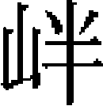

張興祖 寧玉 張榮實玉 吕德 朱國寶 吴祐安民 梁禎 張泰亨繼祖 珍 王守信 皇毅 靳忠 蔡珍韓進 劉用世世恩 世英 蘇津 王均 季庭璋
張興祖，中山無極人。父林，爲史天澤部將，以功授金符千户。林請老，興祖襲父職。從察罕伐宋，能以少擊衆，敗宋人於虎頭關。察罕壯之，奏其功，賜鞍馬、甲胄。後從史權戍鄧州。宋人鈔輜重於新野之西港，權使興祖將步騎數百人追之，及於栲栳潭。興祖令騎負一步，將近敵，推步下，騎列陣以俟，分騎爲左右翼，夾擊之，宋人錯愕不知所應，盡殲之。興祖馬踐横尸而踣，左股折，輿歸，賜金幣爲醫藥費。宋人攻新野，又敗之於白河口。
中統元年，從史樞援東川，假總管，戍東安虎嘯城。軍還，又戍光化州，禽宋將唐都統。大軍圍襄陽，以興祖戍萬山，敗宋援將張順。從攻樊城，興祖督造雲梯，又燒宋人戰艦，斷其襄樊之援。襄陽下，以功擢總管，再擢懷遠大將軍、副萬户。
至元十一年，從伯顔伐宋，攻郢州黄灣堡。先登，矢貫左股，伯顔親爲敷藥。從拔沙洋、新城，矢中額者三。换虎符。從攻陽邏堡，禽宋將鄭信，矢貫左臂。鄂、漢平，以阿里海涯鎮之，使興祖將十六翼兵戍漢陽。興祖曰：「吾戰是求，迺留吾戍此，何耶？」阿里海涯曰：「鄂、漢，乘輿所至，衝地也，非公不能守之。」興祖始受事。宋安撫高世傑規襲鄂州，從阿里海涯敗之於荆江口，世傑降。又從攻沙市，先登，戰於城上。又巷戰，蹀血濡趺，斬馘無算，宋將高達以江陵降。阿里海涯移軍攻潭州，留興祖於鄂。已而計事至潭，使興祖督攻城西北，三月不下。或議燒其木栅，興祖曰：「火易沃滅，不如炮攻，使敵不能隊立，吾肉薄而登，可以得志。」阿里海涯從之，城遂拔，進興祖安遠大將軍。又從阿里海涯攻靖江，屠之。宋益、衛二王立於海上，湖南羣盜蠭起相應。阿里海涯使興祖討之，斬賊首二千九百餘人，安輯降衆二萬三千九百家。常德路總管謀以城叛，事覺，興祖誅之。進昭勇大將軍、招討使、歸州路達魯花赤，位總管上。旋移常德路達魯花赤，仍招討使，位總管上。十七年，詔興祖征羅氏鬼國，會其酋納款，未至而還。復使討亦奚不薛，降之，偕其酋入覲，賜衣服、弓矢、鞍勒。
興祖平生殺虎數十，一日遇虎，一發而踣，語左右曰：「生虎髭剔齒，可以已風。」拔之，虎怒，爪其靴裂，興祖立殺之，人遂名興祖爲「殺虎張」。至是，以國語賜號拔都。尋罷招討使，以萬户將真定新軍戍衡州、茶陵、耒陽、常寧。元貞元年卒，年七十五。
興祖負氣，重然諾，不可屈以威武。阿里海涯大會諸將，興祖腰刀行酒，阿里海涯避入後閣，曰：「張公醉矣！」戒左右善扶出。諸將皆憚之，無敢坐其上者。
子鑄，管軍總把，從興祖戰於通城，陣殁；史閭，懷遠大將軍，戍瑞州等處萬户；鵬翼，僉嶺北湖南提刑按察司事；塔剌齊，襲懷遠大將軍、真定新軍萬户。
寧玉，孟州河陽人。貌魁梧，膂力絶人。年十七爲棹卒，署孟津渡長。從世祖渡江，以功授百户。世祖即位，召玉充河道官，疏濬玉泉河。
至元三年，大軍攻襄樊，檄玉導鄧州七里河，由新野而南，以通糧運。襄陽圍合，以玉攝萬户府事，兼管浮梁津渡，教習水軍。
十一年，伯顔渡江，玉以千人導前，至白河，爲浮橋濟師，遂拔沙陽。與宋人戰於江中，玉以輕舸五十艘徑奪南岸，指撝戰艦分渡諸軍，凡三晝夜始畢。至彭蠡湖口，風濤洶湧，浮梁數壞，玉躬督士卒，植巨木爲碇。伯顔立馬俟之，師畢濟。進及丁家洲，與宋將夏貴等相持，南軍舳艫蔽江，伯顔使玉發四炮，擊其中堅，舟多覆，遂大敗之。拜管軍千户，佩金符。伯顔入建康，使玉督造戰艦，分玉三十艘守龍灣口。宋將姜才乘夜來攻，玉潛以巨艦出其後，夾擊之，斬獲殆盡。從拔平江，平江之南曰太湖，有長橋爲南北要衝，伯顔使玉守之。時江南甫下，江海多盜賊，玉密斷諸港，設置輕舸巡邏，以備非常，賊聞風解散。招集流民四萬餘家，境内帖然。遷管軍總管，擢浙西道吴江長橋都元帥，兼沿海上萬户，佩金虎符。
二十三年，以病乞歸。未幾，起玉從鎮南王討交趾。師至安南，疾甚，王憫之，使玉歸，以子居仁襲職。大德六年卒，年六十七。居仁襲沿海上萬户，佩金虎符。從討爪哇，擢昭勇大將軍、佩三珠虎符、左軍上萬户。累擢鎮國上將軍、廣東道宣慰都元帥。弟居正，從討交趾，以功擢杭州路領海船千户，累遷僉行樞密院事。
張榮實，霸州保定人。父進，金封北平公。太宗四年，率所部來降，太宗命爲征行萬户［一］。六年，與金將國用安戰於徐州，死之。
榮實始以質子入宿衛，授金符，充征行水軍千户。九年，改雄州，保定新城長官。後統水軍，從大將察罕伐宋。至淮上，遇宋將吕文德，敗之，俘五十餘人。賞銀碗、戰馬。又從攻江陵，略襄陽。宋以舟師横截漢水，榮實力戰卻之，獲戰船數十艘。察罕以聞，賜錦袍及銀十五斤。又破宋軍於太湖，賜銀百兩。
憲宗九年，從世祖伐宋，駐陽羅渡。宋兵十萬，舟二千，横截江中以禦我師。帝以榮實習水戰，命爲前鋒。榮實率麾下鏖戰北岸，獲宋大船二十，俘二百人，斬其將吕文信。
中統元年，録前勞，授金虎符、水軍萬户，仍以其子顔代爲霸州七處管民萬户。三年，李璮叛，榮實從史天澤討平之。賜金碗及銀二百五十兩、馬一匹，命鎮膠西。
至元九年，從丞相阿朮攻襄陽，敗夏貴。又攻樊城，俘其二將。賜弓矢、鞍勒。十一年，增領新軍，從丞相伯顔渡江。榮實以所部先進，鄂、漢降，論功授昭毅大將軍。與萬户宋都台等取江西。又從阿里海牙攻岳州，宋將高世傑降，以功加昭武大將軍。偕元帥宋都台圍隆興，守將劉槃降。又與吕師夔進逼撫州，宋將密佑逆戰於進賢平，敗之，生獲佑，撫州降。
十三年，授同知江西道宣慰使，俄進鎮國上將軍、福建道宣慰使。十四年，改江東道宣慰使、行省參知政事。命與右丞塔出安輯廣東。十五年，入覲，帝賜酒慰勞，授湖北道宣慰使、諸路水軍萬户。是年卒，年六十一。三子顔、玉、珪。
玉，襲父職爲懷遠大將軍、諸路水軍萬户。至元十六年，討吉安叛賊，有功。入朝，賜金織文衣、弓矢、佩刀，加輔國上將軍、都元帥，並水軍萬户，鎮黄州。又與元帥唐古特改立蘄、黄等路都元帥府，仍管本道鎮守軍馬。二十一年，廣東盜起，遏絶占城糧運，玉討平之。入朝，賜金織文衣、鞍勒、弓刀。會元帥府罷，命玉充保定水軍萬户。二十二年，以鄱陽湖多盜，詔徙水軍萬户府於南康。
明年，從鎮南王脱歡征交趾。二十四年，王至思明州，玉與湖廣行省參政樊楫亦引兵至萬劫江，累戰有功。二十五年，將士以疾疫不能進，引還，且戰且行，終日數十合。賊據險，發毒矢，將士死傷過半。爲賊邀遮於白藤江，潮退，舟膠，玉力戰，身被數創，投水中。賊鉤致玉，殺之。
吕德，字伯亨，東平汶上人。少孤貧。常負其勇，僞爲商賈，入宋邊境掠生口。宋邊將懸賞購之，莫能獲。至元初，闊闊帶等伐宋，募壯士偵淮南虚實。德應募，率八十四人襲破宋泗州安河口栅，獲裨將三人。事聞，賜衣一襲。後從大將烏馬爾至京師，獻策招集河南達爾罕軍，以備征調，從之。以烏馬爾爲統軍萬户，德爲千户副之，招徠降人七百餘户。行樞密院以德充壽州等處招討司鎮撫，引兵渡淮，抵六安野人原，招降宋將。轉攻安慶，進泊丁家洲。宋人阻江自守，德擊敗之，獲其將閻統制。
十二年，行省檄德充江陰、鎮江路軍民都鎮撫。積前後功，擢武略將軍，佩金符。十四年，從宣慰使李庭屯處、婺等州。永康、浦江盜發，德討捕之，獲賊首張炎、季文龍。餘黨復剽龍泉，庭追賊，馬絓於木而踣傷股，兵遂失利。德反旗鳴鼓，賊始駭遁。論功，以德攝招討司事。
十五年，復從宣慰使史格討龍泉賊，擒賊首張三八等，餘衆悉降。慶元賊陳弔眼聚衆叛，自稱頭陀軍。德將鋭卒數百，夜掩其壘，擒之。擢武節將國、管軍上千户。
二十年，青田吴提刑與政和賊黄華通，僞稱宋祥興五年，鑄兩浙安撫司印，勢張甚。德與趙萬户討之，斬其將毛統制等，賊潰走。獲宋陳丞相僞劄及賊首黄華印榜。德威名益著。
二十六年，嵊縣賊楊震龍叛，壁龍興山，自稱國主，僞造龍鳳法物。左丞相忙兀帶調水軍萬户虎兒哈赤討之，以德充行軍都鎮撫，點視諸翼兵馬。德敗賊於新昌，進至桃源。賊衆萬餘人屯史家樓，甲胄精明，官軍望之失色。德笑曰：「此鋤田夫耳，何足涴吾馬足！」大呼陷陣，賊披靡，悉棄其甲胄而遁。明日再戰，復敗之，擒其驍將張九。三月，德率所部與虎爾哈赤徑至龍興山，瞰賊巢，縱火焚之，賊拔栅走。四月，復與萬户土哈爾會師於天台，賊首曹榮等出降。六月，武義、永康降賊復叛。德與蔡推官輕騎出，諭以禍福，賊首相顧曰：「弁而甲者，吕將軍也。」相率拜馬首，從德入城。
德往來浙東十有三年，大小數百戰。所至先榜招諭，降者甚衆，不聽命，然後殺之。諸將或並坐論功，德歎曰：「取赤子頭顱易賞級，吾不忍也。」
二十八年，除東平等路中千户。德風疾作，不能拜，請以子世英自代。未幾卒，年六十四。
朱國寶，大都寶坻人。父存器，修内司使，嘗夜行，獲金一囊，坐待其主至，還之。
憲宗將攻宋，募兵習水戰，國寶以職官子從軍。世祖攻鄂州，國寶攝千户，率鋭卒於中流，遇宋師，凡十七戰，諸軍始濟。
中統二年，授千户，佩銀符。三年，從圍李璮於濟南，佩金符。又從征襄陽，攝四翼鎮撫，督造戰艦，築萬山堡。及拔沙洋、隳新城，皆有功。初，師次江上，國寶願當前鋒，既而奪船二十艘以獻，伯顔壯之。宋人據上流，方舟數百，結爲堡栅。伯顔指示曰：「復能奪取是乎？」國寶即應聲往，破其栅而歸。
既渡江，進兵岳州，與宋人戰於桃花灘，獲其將高世傑。累進宣武將軍，統蒙古諸軍鎮常德府，知安撫司事。時郡邑多堅守不下，國寶傳檄招諭，踰月悉平。惟辰、沅、靖、鎮遠未降。宋將李信、李發結武岡洞蠻分據阨塞，國寶擊敗之。其衆退保飛山之新城。思、播蠻來援，國寶復敗之，擒張星、沈舉等三百餘人。進攻新城，獲信、發等，獻俘江陵，賜金虎符。
至元十三年，會諸道兵攻廣西静江，拔之。授管軍萬户，鎮梧州。十五年，加懷遠大將軍。劉宗純據德慶府，國寶攻之，焚其栅，遂拔德慶。南恩、新州何華、張翼等舉兵應張世傑，國寶擊殺之，降其民三萬餘户。遷海北海南道宣慰使。蜑賊連結鬱林、廉州諸洞，恣行剽掠，國寶悉平之，任龍光等率所部五千户降。移瓊州，訓兵息民，威惠大行。南寧謝有奎負固不服，國寶開示信義，有奎感悟，以其屬來歸。又招降居亥、番毫、銅鼓、博吐、桐油等十九洞。遣兵略大黎、密塘、横山，焚其巢，生致大鍾、小鍾諸部長十有八人。加鎮國上將軍、海北海南宣慰使都元帥。供給占城軍餉，事集而民不擾。二十三年，遷廣南西道宣慰使。
二十四年，入覲，帝慰勞之。二十五年，進輔國上將軍、都元帥、參知政事、行尚書省事。以軍事至贛州，得疾卒，年五十九。子斌，襲海北海南道宣慰使、都元帥，加賜金虎符；贇，上副萬户，佩金虎符，鎮福州。
吴祐，安豐壽春人。至元十二年，大軍次安慶，范文虎以城降，祐方以鄉兵保壽春，道梗不通，亦降。伯顔渡江，以祐爲鄉導，由池口趨建康，克建平、長興二縣，據獨松關。又從大軍渡錢塘江，攻越、台、温三州，進克莆陽縣。以功除懷遠大將軍、招討使。至元十四年卒。子安民，襲父職。
安民，字惠卿。從其父祐於行間。大軍破獨松關，渡浙江，略定温、台，踰嶺拔莆田，安民功最多，而以功歸其父。大帥曰：「吴祐子有功，宜别賞之。」命署千户。祐卒，安民襲管軍總管，鎮揚州。
大軍伐日本，安民請行，授宣武將軍、征東副萬户。遇颶風，將士漂溺，安民附敗舟，遇高麗邏者，載與俱還。
二十年，建寧黄華叛，安民率所部討之，逾九峰嶺，直抵平溪，俘其家屬輜重，華始就擒。移鎮湖州，調嘉興路，又移鎮壽春。二十六年，從大軍討江西賊鍾朗、興國賊吴大仲，並有功。後移鎮和州。大德四年，卒。贈騎都尉、渤海郡伯。子繼武，襲壽春路副萬户，晉武略將軍，轉武德將軍。至治二年，流民渡淮，白晝剽掠，繼武禽爲首者斬之，境内肅然。歲飢，繼武勸富民出粟以食餓者，又請漕荆湖米贍軍，得一萬八千石，全活甚衆。至順元年，卒。
梁禎，字用之，大名元城人。金末，河北盜起，禎父千聚衆自保，後率所部來降，授金吾衛上將軍、大名兵馬都總管。宋將彭義斌渡河，羣盜響應，千搜城内倡亂者誅之，餘皆懾伏。太宗三年，大名守將蘇椿叛，大將阿朮魯怒，欲屠城，千輸金帛於阿朮魯請命，卒獲免。千卒，長子汴襲職。會伐宋，復籍新軍，擇諸將子弟爲統領，中書、樞密議以汴領之。禎請曰：「兵事至重，不應獨責吾兄。禎宜行效死，弗敢辭。」二府壯之，使攝新軍千户，鎮睢州。
大軍伐宋，與宋將夏貴相持，禎率所部分擊，斬獲甚衆，以功授新軍千户。中統三年，李璮叛，禎攝本軍元帥討之。璮善戰，多殺將士，及璮誅，諸將議屠降衆。禎密白宗王哈必赤曰：「璮逆黨俱江淮逋寇，非土著，宜分别脅從，以安新土。」哈必赤然之。至元十一年，移邳州。十三年，從大軍攻常州。有裨將架木爲橋傅於堞，俄中弩死，以禎代之。禎緣附以登，城陷。論功，擢武義將軍，佩金符。江南平，改鎮紹興。三十年卒，年七十。子紹祖襲千户。
張泰亨，東昌堂邑人。父山，以管軍千户爲堂邑縣丞。泰亨襲千户，從攻宋釣魚山，及圍樊城，又從征女兒阿塔，俱有功，授銀符、侍衛軍總把。從禽李璮，賜金符，擢京東、歸德等處新軍千户，累遷元帥府都鎮撫。至元十二年，進武略將軍、管軍總管，尋進明威將軍。從攻潭州，中流矢，拔矢力戰，遂克之。十三年，賜虎符，進武德將軍，從征廣西。十四年，軍還，卒。泰亨與其父山俱有智勇，當時稱其父爲拔都，稱泰亨爲「堂張」，以别其姓焉。子顯祖、繼祖、榮祖。
繼祖，字善卿。幼穎悟，博學强記。襲父職，後授昭信校尉，佩虎符。喜親文學士，名譽籍甚，平章阿里海涯深器之。十八年，從阿里海涯移鎮鄂州，舟過洞庭，風大作，繼祖恐阿里海涯舟不能達，棹輕舸疾進，溺死。弟榮祖，管軍總把，亦同死。繼祖妻郭氏守節，大德中有司奏其事，予旌表。
初，顯祖以目眚不能襲父職，至是繼祖子震幼，乃以顯祖代之。二十四年，從征交趾，戰殁。震襲職，充昭信校尉、管軍上千户，佩金符。延祐二年，加武略將軍。累擢武節將軍、潁州副萬户。卒，子珽襲。珽弟珍。
珍，字元諒。以蔭授武略將軍、潁州翼萬户，鎮杭州。至正十二年，賊陷常州，珍引兵伏横林，邀敗之，遂復常州。十三年，江陰賊起，太尉納麟檄珍討之，斬獲甚衆。八月，浙東元帥野先與珍合屯胡村，野先敗死，珍冒圍以入，馬蹶，拔所佩刀自刎死。時江浙參政買住丁按兵不救，故珍等及於難。
王守信，霸州大城人。父英，水軍千户，賜銀符，從討李璮，戰殁。守信襲父千户，戍膠州。從圍襄陽，戰有功，换金符。從攻樊城，登其外郛，又斷江中鐵絙，獲敵艦三十艘。樊城拔，擒宋將徐麟。前後累賞銀鈔。從伯顔渡江，敗宋師於柳林，擢都鎮撫。從攻新城、沙洋，拒夏貴於陽邏，俱有功。又從都元帥府定江西，授宣武將軍、管軍總管。轉戰廣東，拔韶州，敗宋將方安撫於石門，授明威將軍。從擊文天祥於興國之雲坑，獲其妻子。又從敗張世傑於廣州，獲戰艦一百八十艘。再授明威將軍。入覲，賜虎符，還戍廣州。平葛

洞、厓石寨，殲李梓發於南安，别降新會賊林桂芳、清遠賊潘舍人。歐將軍僭號稱王，遣其黨襲廣州，守信擊走之。歐合於新會賊黎德，衆號二十萬，戰艦至七千艘。其别將吴林以八百艘圍馮村，守信大敗之，林溺死，生獲歐、黎，與僞都督、丞相二十四人，皆磔之，椎其僞符璽。召入都，加懷遠大將軍、同知廣東宣慰司事，賜衣服、弓矢、鞍勒。行省恐守信受代去，預乞於尚書省留之。再授懷遠大將軍、同知廣東宣慰司事。守信前後在廣東十八年，斬獲賊首二百七十一人。或梯崖縋谷，窮其巢穴，水戰則乘烏船游擊之，不盡不已，故所向有功。三十年卒，年五十六。子弼，新州同知。
皇毅，真定藁城人。父全，署千户。毅有勇略，董文炳使雲南，從行三十二人，毅其一也。世祖攻鄂州，從文炳奪宋南岸梁子湖水栅。世祖即位，北討阿里不哥，使將壯士五十人以從。文炳戍鄧州，署毅爲征行千户。從大軍敗夏貴於泓河口，以功授百户。又從敗張世傑於焦山，奪戰艦二，授總把，佩銅印。文炳略定淮東，表爲千户，佩銀符。
兵還，北戍黑城，進武略將軍，佩金符。築上都東西涼亭，有功，進武德將軍、親軍總管，例改總管爲千户，又爲前衛親軍千户。從世祖討乃顔，敗賊於吐忽哥，又與前鋒敗賊於兀魯古河，又戰於末温，戰於哈刺木干，又與賊將金剛奴戰於扎答，獲之。乃顔平，進宣武將軍。告老歸，以子度襲職。大德元年，卒。
靳忠，深州静安人。以材勇爲阿朮所知，拔爲帳下親軍。從攻樊城，又從破沙洋、新城，攝行軍百户。至元十二年二月，追敗宋殿帥孫虎臣，奪其乘舟，伯顔壯之。及常州破，録前後功，真授管軍百户。江南平，伯顔以忠賞不酬勞，命爲管軍千户，佩銀符。
從討建寧黄華，手刃賊首黄朝奉、王拔都，又獲其驍將陳統制。行省賚白金碗二以旌之。後以伯顔薦，除武略將軍、鄧州翼管軍下千户。二十一年，從忙古台入朝，賜金符，就擢中千户。樞密院申定兵制，又改下千户，卒。
忠禮敬賢士，恂恂有儒者風。先是，諸將討閩、浙之亂，多俘良民爲奴。忠令自相保任，散歸鄉里。其後男女相攜來謝，作齋祠以爲福報焉。
蔡珍，彰德安陽人。父興，管軍百户，告老，以珍代之。珍素驍勇，從憲宗伐宋。從世祖征阿里不哥。又從討李璮，敗其兵於老僧口。後戍襄陽，從攻安慶、五河，復漣、海二州。授忠顯校慰、管軍總把，尋權千户。十四年，扈駕黑城，珍儲芻藳，營土室，諸軍賴之。累遷中衛親軍總把，改後衛，賜銀符。白海建行營，命珍督役卒事，民不知擾，下至草木無纖介之損。帝臨幸，問其故，左右以珍軍令嚴肅對，帝嘉之。二十一年，改膠東海道都漕運萬户府都鎮撫。遷後衛親軍千户，佩金符。至大四年，進武略將軍，卒。
先是，彰德帥麾下軍校二人，以剛直忤衆。或譖其外叛，帥遽命斬之，珍力爲營救，始得釋。及珍卒，二人俱使其子服喪三年。子恕，襲後衛親軍千户。
珍同縣韓進，亦以材勇顯，進以百户。從大軍攻宋合州釣魚城，及攻鄧州、襄陽，俱有功。世祖即位，又從破李璮，賜號拔都，賞錦衣、寶鞍。至元十一年，樞府劄管襄樊歸附新軍。是年九月，從征東副元帥洪茶邱伐日本，擢中衛千户，管北京等新簽洪軍。十五年，拜忠顯校尉、管軍總把。累擢武德將軍，賜金符。復從伐日本，充行軍都鎮撫。大德三年，遷宣武將軍，卒。
劉用世，其先本遼東人。父福，以親王移相哥驅户，官淄州，遂爲淄州人。福卒，用世襲父職，權行軍千户。十二月，從破武磯堡，據其木栅四重，決濠水灌之，又以雲梯登陴，斬獲甚衆。十一年，從敗宋舟師於丁家洲，奪其戰艦。以前後功，進武略將軍。十五年，從李恒入廣州，敗宋王侍郎軍於閻部口，又敗凌制置軍於海珠口。十六年，與宋兵戰於厓山，用世擒其副統制祝永昌、副將孟德凱。旋加武德將軍，賜金符，移鎮龍興，卒。
用世二子：世恩、世英。世恩有膂力，能挽强命中。厓山之戰，恒出奇計，作射栅，度與南船相直，選世恩等七八人射之。世恩弦不虚發，自卯至午，宋軍大潰。後以疾讓職於世英。及世恩子源成立，世英慨然曰：「吾兄子已能荷戈帶甲，宜還其禄秩，吾退居田里可也。」請於朝，復以源襲千户，時論稱之。
蘇津，滕州人。兄潤，金末起義兵。累遷懷遠大將軍，滕州太守。孛魯攻滕州，潤巡城，中流矢卒，城降。時津爲杞縣丞，棄官歸。東平總管石天禄，津之鄉人也。招之爲沛縣兵馬都總領兼分治縣令。津安輯流亡，沛人德之。遷武顯將軍，左監軍，同知滕州。中統三年，李璮據濟南叛，宋人乘釁遣夏貴襲陷蘄、宿等城，津從張禧援之。所至號令嚴明，市不易肆。阿朮魯上功，擢定遠大將軍，左副元帥兼睢州知州，卒於官。
王均，字潤夫，襄陽人。性倜儻不羈。張子良爲歸德府總管，辟均從事。遷行省掾，以策干都元帥劉整。整奇之，奏爲元帥府經歷，佩金符。襄陽下，擢襄陽總管府判官。至元十三年，詔以湖南戍兵多疾，由不習食稻，使均轉粟湖南，饋阿里海涯兵。遷奉議大夫、行省左右司員外郎，遥授慶源府知府。
十五年，擢朝列大夫、左右司郎中。是時用兵瓊、崖、儋、萬四州，均督一切，供億無缺乏。擢中議大夫、永州路總管。永州當土賊作亂後，長吏旁逮根株，以責賕賂，均繩之以法。民始安堵，父老數百人狀其治於行省。大軍征日本，賦造兵船，取材於民，而促其期，均不爲威鷙，而事自辦。二十四年，遷少中大夫、静江路總管。鎮南王征交趾，行省檄均至海北，督饋運。又詔料民海外，往返數四，得户十有六萬。二十七年，卒，年六十四。子天錫，酃縣尹。
季庭璋，莒州人。父智仙，千户。庭璋從大軍圍襄陽，敗宋援兵，授敦武校尉、右衛親軍百户。十三年，巡哨高郵、寶應，累有功，進忠顯校尉、侍衛親軍總把。宋平，賜銀符，進忠翊校尉。
十五年，從大軍北征，擢漢軍都元帥府都鎮撫。率所部戍和林成闊闊之地，宗王伯木兒賜以牛羊。十八年，擢武略將軍、管軍千户。二十六年，世祖親征乃顔，命左丞李庭舉精於韜略者，以庭璋應選，詔馳驛至軍中。二十七年，軍還，换金符，進武德將軍、右衛親軍千户。卒，子珍，襲父職。
【校勘記】
［一］「太宗」，原作「太宋」，據《元史》卷一六六列傳第五十三《張榮實傳》改。
本章完!